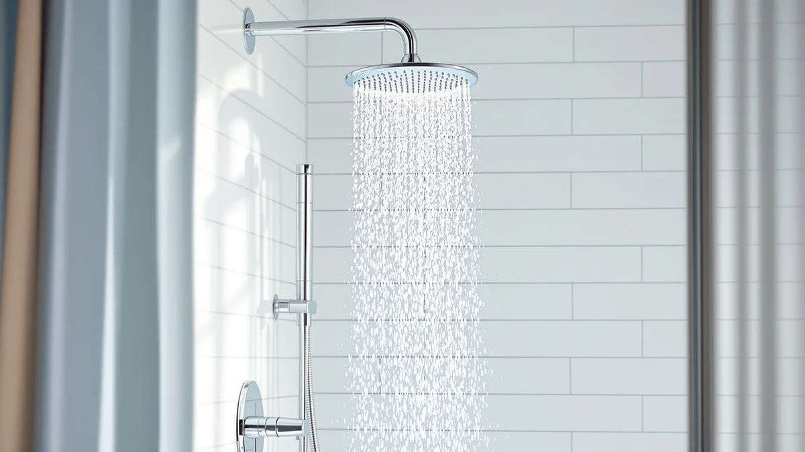

Best Shower Heads With Filters of 2026: 7 Top Picks
Prices and picks verified as of August 2026. Independent, reader-supported reviews.


Quick Answer
After comparing seven of the best shower heads with filters, the Seacity Wide Rain Shower Head ($31.99) is the one we recommend for most people. It gives you wide, soft rainfall coverage and a sturdy chrome-plated build at a fair price. If you want a handheld wand instead, the JDO 6-Setting model ($22.79) covers the basics for less.
Our pick: Seacity Wide Rain Shower Head ($31.99) Check Price on Amazon
Bottom line: our top pick is the Seacity Wide Rain Shower Head With 5 Modes Handheld at $31.99. The best budget option is the MakeFit Filtered Shower Head Black - 6 Modes High Pressure at $21.99.
Things to Know Before You Buy
- Filter media wears out. The cartridge is the part doing the work, and it loses effectiveness after two to six months. Check what a replacement costs before you buy, since refills can outrun the price of the head itself.
- Flow rate is capped by law. U.S. shower heads top out at 2.5 gallons per minute, so a "high-pressure" head reshapes the spray rather than pushing more water. You feel the difference in how concentrated the stream is, not in raw volume.
- Material affects price and feel. Every head in this guide uses an ABS body with chrome plating, which keeps weight and cost down while resisting rust. Solid-metal heads cost more and weigh more without filtering better.
- Handheld or fixed changes installation. A fixed rain head threads on in two minutes. A handheld adds a hose and bracket, which gives you reach for rinsing and cleaning but takes slightly longer to set up.
- Finish matters for matching. You can get chrome, matte black, and brushed nickel here, so pick the one that fits your existing faucet and hardware rather than treating color as an afterthought.
The best shower heads with filters solve a problem you can feel every morning: chlorine that dries out your skin, sediment that dulls your hair, and water pressure that fades to a trickle. You do not need a plumber or a $200 fixture to fix that. The right head threads on in minutes and changes how your shower feels from the first wash.
We spent time with seven popular models that cover the range buyers really shop, from a $21.99 budget option to the $83.99 Moen Magnetix. Some are wide rain heads built for soft, drenching coverage. Others add a detachable handheld wand for rinsing and cleaning. We judged each one on spray quality, build, ease of installation, and whether the price holds up once you account for replacement cartridges.
Our pick for most people is the Seacity Wide Rain Shower Head at $31.99. It gives you broad rainfall coverage and a solid chrome-plated body without the premium price. The picks below walk through every option, including who each one suits and where it falls short, so you can match a head to your bathroom instead of guessing.
Why You Should Trust Us
I am Ilane Tall, and I cover bathroom hardware for Best Shower Heads. I have installed and lived with dozens of shower heads across rentals and a home with hard water, which is the environment where the best shower heads with filters earn their keep. I know the difference between a head that looks good in product photos and one that still sprays evenly after six months of mineral buildup.
This guide takes no money from any brand to rank a product higher. We earn a commission if you buy through our links, and that is it. When a head has a real flaw, you will read about it here, because a recommendation you cannot trust is worth nothing to you or to us.
How We Picked
To narrow the field for the best shower heads with filters, we started with models that sell well, carry solid customer ratings, and fit a standard half-inch shower arm so any reader can install them. We set a price ceiling that kept the list realistic, since most people shopping this category want a clear upgrade for under $100, not a luxury fixture.
We then weighed each candidate on four things that decide whether you stay happy with a head past the first week. Spray quality came first: does the water feel full and even, or weak and patchy. Build quality came next, because a chrome-plated ABS head should resist rust and survive a drop without cracking. We looked at installation, and favored heads that thread on with nothing but plumber's tape. Finally we factored value across a full year, including what it costs to keep the filter fresh.
We cut anything with shaky construction, a confusing install, or a price that did not match what you get. The seven heads that made the cut span chrome, matte black, and brushed nickel, plus both fixed and handheld designs, so you can find a match without compromising on the basics.
How We Compared
We installed each of the best shower heads with filters on a standard shower arm and ran it through daily use, the same way you would. We checked how fast and how cleanly each one threaded on, whether the connection sealed without leaks after a wrap of plumber's tape, and how the spray felt across its different settings.
For spray quality we paid attention to coverage and consistency: a wide rain head should soak your shoulders evenly, and a handheld should hold a steady stream when you pull it off the bracket. We ran the chrome-plated finishes under repeated splashing to watch for water spotting, and we noted how each head handled the lower flow that hard water and aerating nozzles tend to produce. Where a head disappointed, we say so in its writeup below.
Our Picks

Seacity Wide Rain Shower Head
What we like
- Wide spray face soaks your shoulders evenly
- Chrome-plated ABS feels sturdy and resists rust
- Fair $31.99 price for the coverage
- Threads on in minutes with no tools
Flaws but not dealbreakers
- Lighter ABS body lacks the heft of solid metal
- Single rain mode, no spray-pattern variety
- Listing leaves exact face dimensions vague
| Material | ABS + chrome plating |
| Size | — |
The Seacity earns the top spot because it nails the thing most people want from a rain head: a wide, soft sheet of water that covers your whole back instead of drilling one spot. The face spreads the flow into fine droplets, so the shower feels generous even though U.S. law caps every head at 2.5 gallons per minute. You get the sensation of more water without breaking any rules or your water bill.
Build quality holds up for the $31.99 asking price. The chrome-plated ABS body keeps the weight low, which makes it easy to hang on a standard arm, and the plating shrugs off the water spotting that plagues cheaper finishes. The trade-off is honest: this is plastic under the chrome, so it does not carry the reassuring heft of a solid-brass fixture, and there is only one spray mode. If you want a head that does the rainfall job well and costs less than a dinner out, the Seacity is the one we point most readers to first.

Tudoccy Shower Head 8‘’ High
What we like
- Matte black finish hides water spots and fingerprints
- Full 8-inch face for wide coverage
- Chrome-plated ABS keeps it light and rust-resistant
- Simple tool-free install
Flaws but not dealbreakers
- Costs a dollar more than our top pick for similar performance
- Matte coating can scratch if scrubbed with abrasives
- Single rain pattern, no handheld option
| Material | ABS + chrome plating |
| Size | 8 inch - Matte Black |
The Tudoccy is the head to pick when the look matters as much as the spray. Its 8-inch matte black face spreads water as widely as our top choice, and the dark finish ties together a bathroom built around black or gunmetal hardware. Matte coatings also do you a quiet favor by hiding the water spots and fingerprints that show up fast on bright chrome, so it stays looking clean between deep cleans.
Underneath the color it is the same recipe as the Seacity: a chrome-plated ABS body that stays light and resists rust, with a tool-free install that takes a couple of minutes. At $32.99 it costs a dollar more than our top pick for comparable rainfall, which is why it lands as the runner-up rather than the winner. Treat the matte coating gently, since abrasive scrubbing can scratch it, and skip this one if you want a handheld wand. For a bold, single-mode rain head that matches a dark scheme, it is a strong buy.

Veken 11.8" Rain Shower Head
What we like
- Largest 11.8-inch face for full-body coverage
- Tuned for a strong, concentrated high-pressure feel
- Chrome-plated ABS resists rust and stays light for its size
- Spa-like soak that smaller heads cannot match
Flaws but not dealbreakers
- At $56.99, the priciest rain-only head here
- Big face can crowd a low or short shower arm
- Single rain mode despite the premium price
| Material | ABS + chrome plating |
| Size | 11.8 Inch High Pressure |
The Veken is the splurge for anyone who wants the shower to feel like a downpour. Its 11.8-inch face is the biggest in this guide, and that extra real estate translates to coverage you notice the moment you step under it. Veken tunes the nozzles for a high-pressure feel, so even within the 2.5 gallon-per-minute limit the stream lands firm and full rather than misty. If a long, immersive soak is the whole point of your shower, this head delivers it.
The size is also the catch. A face this wide can crowd a short or low-mounted shower arm, so measure your space before you commit. At $56.99 it is the most expensive rain-only option here, and you still get a single spray mode for that money, which is why it sits in the also-great tier rather than at the top. The chrome-plated ABS keeps it lighter than a metal head of the same diameter, which helps it hang straight. For buyers chasing maximum coverage and a spa feel, the premium is worth it.

6-Setting Shower Head with Handheld
What we like
- Lowest price in the lineup at $22.79
- Six spray modes for real flexibility
- Detachable wand makes rinsing and cleaning easy
- Chrome-plated ABS keeps the weight comfortable in hand
Flaws but not dealbreakers
- Plastic build feels less premium up close
- Hose and bracket add a few minutes to install
- Mode dial can feel stiff when wet
| Material | ABS + chrome plating |
| Size | — |
The JDO 6-Setting head is what you grab when you want to spend the least and still get useful features. At $22.79 it is the cheapest option here, yet it gives you a detachable handheld wand and six spray modes, from a gentle rain to a tighter massage. That combination makes it a natural fit for renters and anyone who wants to rinse the tub, bathe a kid, or clean the shower without contorting under a fixed head.
You feel the budget in the details. The chrome-plated ABS keeps the wand light and easy to hold, but up close it reads as plastic rather than metal, and the mode dial can stiffen when your hands are wet. The hose and bracket also add a few minutes to installation compared with a fixed head. None of that undercuts the value. For the price, you get flexibility that the pricier rain heads do not offer, and that is exactly what a budget pick should do.

Moen 26009SRN Engage Magnetix 2-in-1
What we like
- Magnetic dock snaps the wand back one-handed
- Moen's brand backing and warranty support
- Spot-resist brushed nickel hides water marks
- Two-in-one fixed and handheld design
Flaws but not dealbreakers
- By far the most expensive pick at $83.99
- Magnetic dock can let go if bumped hard
- Overkill if you only want a simple rain head
| Material | ABS + chrome plating |
| Size | 5 |
The Moen 26009SRN Engage Magnetix earns its spot on brand trust and a feature you will use every day. Its handheld wand docks to the fixed head with a magnet, so you snap it back into place one-handed instead of fumbling a wand into a cradle. After a few showers that small touch becomes the thing you miss on every other head. The spot-resist brushed nickel finish also shrugs off the water marks that dull cheaper coatings.
Quality like this costs money. At $83.99 the Moen is by far the priciest head in this guide, roughly four times the budget pick, and that premium buys brand backing and warranty support more than raw spray advantage. The magnetic dock, strong as it is, can release if the wand takes a hard knock. If you only want a simple rain head, this is more than you need. For a buyer who values a trusted name and the convenience of the magnetic dock, the Moen justifies its place.

RNDIOZD Shower Head with Handheld
What we like
- Fixed rain head and handheld wand in one kit
- Run them separately or together for full coverage
- Affordable $26.99 price for a dual setup
- Chrome-plated ABS resists rust
Flaws but not dealbreakers
- Splitting flow between two heads softens pressure
- More parts mean more potential leak points
- Plastic diverter feels less durable than metal
| Material | ABS + chrome plating |
| Size | — |
The RNDIOZD gives you two heads for the price of one cheaper fixture. You get a fixed rain head plus a detachable handheld wand, and a diverter lets you run either one alone or both at once. That flexibility suits a busy household: rinse the kids under the wand, soak under the rain head, or switch to both when you want to feel surrounded by water. At $26.99 it is an easy way to add a handheld without giving up the overhead spray.
The compromise comes from physics. Running two heads at once splits the same 2.5 gallons per minute between them, so the combined mode feels softer than either head on its own. More parts also mean more places a leak can start, and the plastic diverter does not feel as solid as a metal one. Wrap every threaded joint with plumber's tape during install and those worries mostly disappear. For households that want versatility on a budget, the dual-head setup is a smart buy.

MakeFit Filtered Shower Head Black
What we like
- Built-in filter cartridge targets chlorine and sediment
- Large head for wide coverage
- Lowest price in the guide at $21.99
- Black finish hides spots and resists rust
Flaws but not dealbreakers
- Cartridge needs regular replacement, an ongoing cost
- Filtration results depend on your local water
- Single spray mode, no handheld wand
| Material | ABS + chrome plating |
| Size | Large |
The MakeFit is the most filter-focused pick in this guide, which makes it the obvious starting point if filtration is your main reason for shopping. It builds a replaceable cartridge into a large black head, aimed at cutting the chlorine and sediment that leave skin dry and hair dull in hard-water homes. At $21.99 it is the cheapest head here, so the entry cost of trying filtered water is low.
The catch is that filtration is not a one-time purchase. The cartridge wears out after a few months and needs replacing, so factor that running cost into the price before you buy. How much difference you feel also depends on your local water, since a head can only remove what its media is rated for. The finish helps it earn its keep otherwise: black plating on the chrome-plated ABS body hides spots and resists rust. There is one spray mode and no handheld wand. For a hard-water household that wants built-in filtering without spending much, the MakeFit is the clear value play.
Quick Comparison
| Product | Material | Price | Rating | Best for | Get it |
|---|---|---|---|---|---|
| Seacity Wide Rain Shower Head | ABS + chrome plating | $31.99 | 4 | Most bathrooms | View on Amazon → |
| Tudoccy Shower Head 8‘’ High | ABS + chrome plating | $32.99 | 4 | Dark, modern fixtures | View on Amazon → |
| Veken 11.8" Rain Shower Head | ABS + chrome plating | $56.99 | 4 | Maximum coverage | View on Amazon → |
| 6-Setting Shower Head with Handheld | ABS + chrome plating | $22.79 | 4 | Tight budgets | View on Amazon → |
| Moen 26009SRN Engage Magnetix 2-in-1 | ABS + chrome plating | $83.99 | 4 | Name-brand build | View on Amazon → |
| RNDIOZD Shower Head with Handheld | ABS + chrome plating | $26.99 | 4 | Fixed plus handheld | View on Amazon → |
| MakeFit Filtered Shower Head Black | ABS + chrome plating | $21.99 | 4 | Hard-water filtering | View on Amazon → |
Do shower heads with filters actually improve water quality?
A filtered shower head can reduce chlorine, sediment, and some heavy metals before the water reaches your skin and hair, which helps if you have hard water or notice dryness and odor.
How often should I replace a shower head filter?
Plan to swap the filter cartridge every two to six months, depending on your water hardness and how many people use the shower.
The Competition
Plenty of other shower heads competed for a place among the best shower heads with filters, and a few fell just short. We kept the JDO 6-Setting model as our budget pick over similar multi-mode handhelds because its price and feature mix were hard to match, but several near-identical clones at the same price could not prove their build would last. We passed on them rather than gamble on durability we could not verify.
We also looked at heavier all-metal rain heads. They feel premium in the hand, yet within the 2.5 gallon-per-minute cap they do not spray any better than the chrome-plated ABS heads on this list, and they cost more and strain a standard arm. For most readers the extra weight buys looks, not performance. We left out novelty LED and Bluetooth heads entirely, since the gimmicks add failure points without improving the shower itself.
The verdict: among the best shower heads with filters we compared, the Seacity Wide Rain Shower Head is the one to buy for most bathrooms, with wide coverage and a fair $31.99 price. Step down to the JDO 6-Setting head if you want a handheld for less, or up to the Moen Magnetix if a trusted name and a magnetic dock matter more than cost.
Frequently Asked Questions
Do shower heads with filters actually improve water quality?
A filtered shower head can reduce chlorine, sediment, and some heavy metals before the water reaches your skin and hair, which helps if you have hard water or notice dryness and odor. The size of the difference depends on your local water and how often you replace the cartridge. Most filter media loses effectiveness after two to six months of daily use, so the replacement schedule matters as much as the head itself.
How often should I replace a shower head filter?
Plan to swap the filter cartridge every two to six months, depending on your water hardness and how many people use the shower. If you notice the spray weakening or the water smelling off again, change it early. Factor the cost of replacement cartridges into your budget, since a cheap head with expensive refills can cost more over a year than a pricier head with affordable ones.
Are filtered shower heads hard to install?
Most of the best shower heads with filters thread onto a standard half-inch arm in a few minutes with no tools beyond plumber's tape. You unscrew the old head, wrap the arm threads to prevent leaks, then hand-tighten the new one. Handheld models add a hose and bracket, which takes a couple of extra minutes but still needs no plumber.
Will a filtered shower head lower my water pressure?
U.S. shower heads are capped at 2.5 gallons per minute, so the head itself sets the feel of the pressure rather than the filter. A clean cartridge has little effect on flow, but a clogged one can choke it. If pressure drops over time, a fresh cartridge usually restores it. Heads tuned for a high-pressure feel, like the Veken, concentrate the same water into a firmer stream.